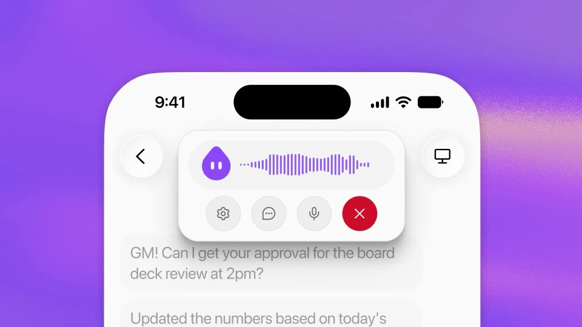
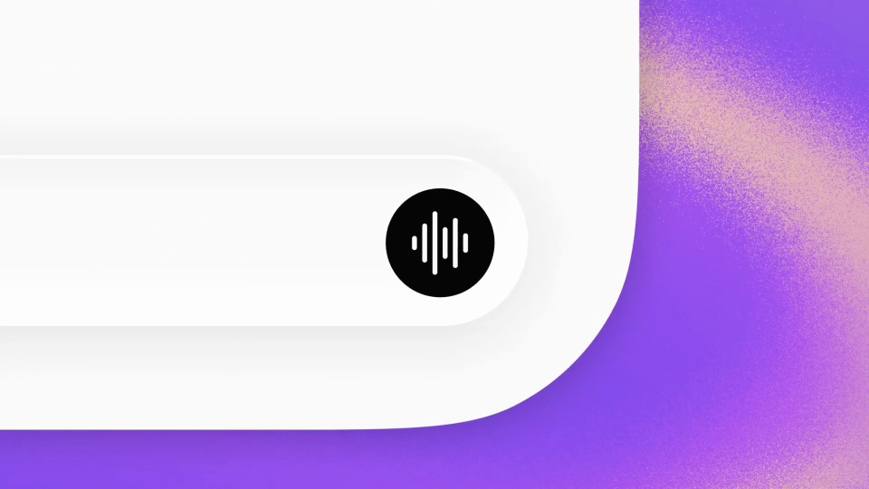
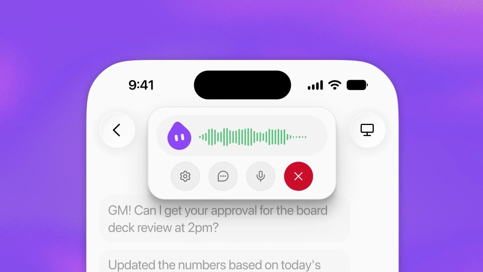
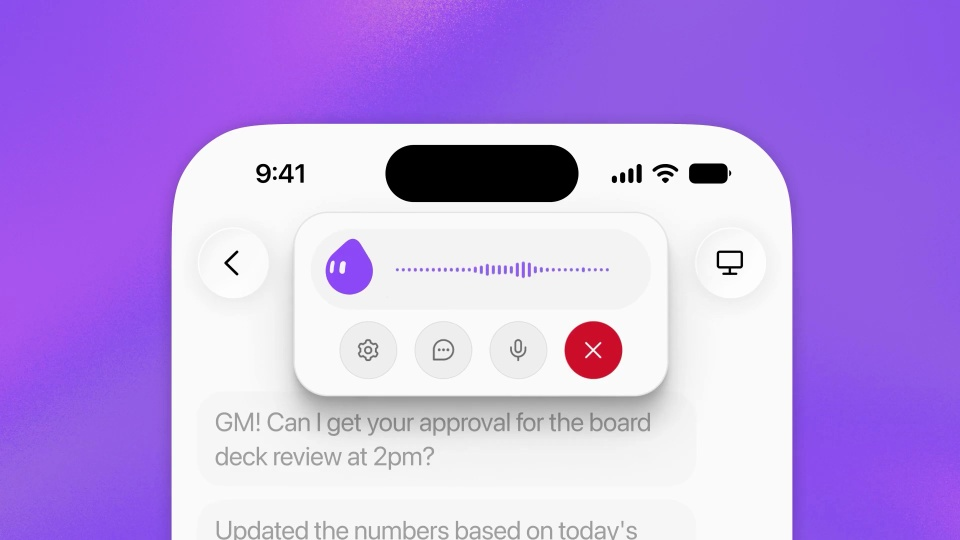
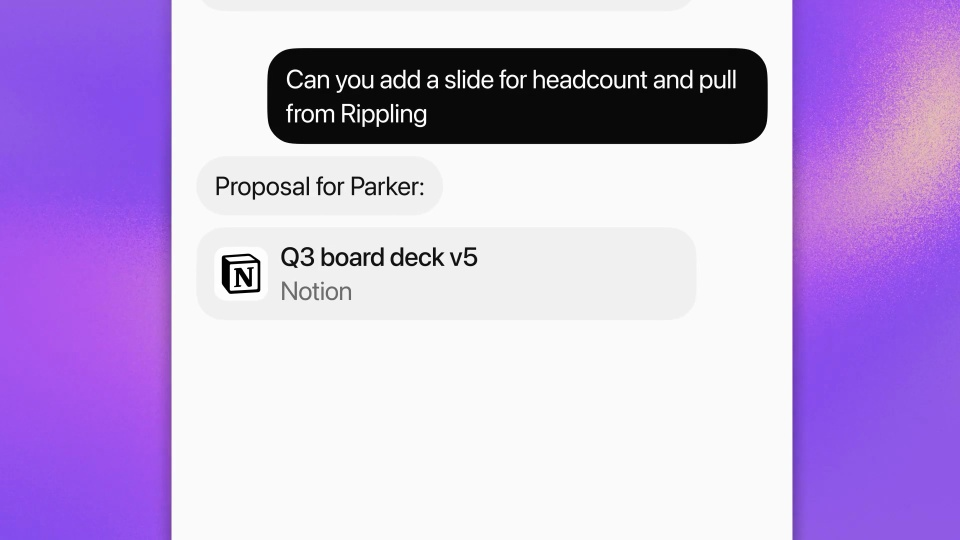
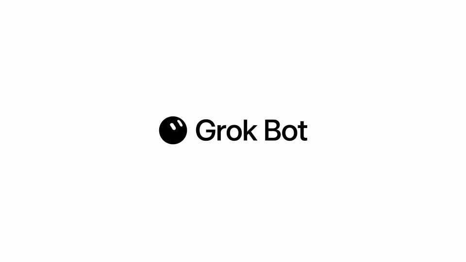

xAI / Grok / V027
Grok Bot can talk now.
让一次讲话最终变成可见的工作成果。语音、处理中和文档各占一个独立状态。
构图与编排 可播放 · 可替换内容
整体编排规则示例
查看 HTML 源码
<!doctype html><html lang="zh-CN"><meta charset="utf-8"><meta name="viewport" content="width=device-width,initial-scale=1"><title>Grok Bot can talk now. · sequence</title><style>html,body{margin:0;width:100%;height:100%;overflow:hidden;background:#fffaff}canvas{display:block;width:100%;height:100%;object-fit:contain}</style><body data-mode="sequence"><canvas width="1000" height="600"></canvas><script src="data.js"></script><script src="common.js"></script><script src="scene.js"></script><script src="bridge.js"></script></body></html>画面元素手机聊天麦克风语音浮层波形工作中状态文档卡
MOTION LANGUAGE
动作与构图
局部动作 · 构图规则
01
把语音浮层附着在手机上
白色聊天手机置于紫橙光晕中，麦克风、波形和聊天内容共用竖向中心。绿色与紫色区分语音表现，文字使用清楚的无衬线。
02
说完以后，界面进入工作状态
说完以后，界面进入工作状态规则示例
查看 HTML 源码
<!doctype html><html lang="zh-CN"><meta charset="utf-8"><meta name="viewport" content="width=device-width,initial-scale=1"><title>Grok Bot can talk now. · sequence</title><style>html,body{margin:0;width:100%;height:100%;overflow:hidden;background:#fffaff}canvas{display:block;width:100%;height:100%;object-fit:contain}</style><body data-mode="clip" data-start="2" data-end="24"><canvas width="1000" height="600"></canvas><script src="data.js"></script><script src="common.js"></script><script src="scene.js"></script><script src="bridge.js"></script></body></html>点击麦克风后展开波形；话语结束后收住波形，转为处理中。再次回应时重新恢复语音表现，避免整个过程都在播放同一段波动。
03
把请求落到文档卡
后段出现明确的文字任务，随后展开对应文档。文档名、版本和任务主题保持关联，让声音引发的变化有具体落点。
04
替换任务与对话
可换成报告、日程或设计交付。先确定用户话语、处理状态和最终产物，再安排波形和字幕的时间关系。
SEQUENCE
段落与节奏
点击段落，定位到上方编排示意。






画面参考 · 离散静帧
KEEP THE RELATIONSHIPS
制作其他主题
- 换为其他助手时保留说话→处理→可见产物。
- 声音与实际波形需单独输入；示例波形仅示意。
制作约束
手机聊天 / 麦克风 / 语音浮层 / 波形 / 工作中状态 / 文档卡
- 语音浮层附着于手机，回应后落到具体任务和文档。
- 波形、处理中、结果是不同状态，不能持续显示同一个波形。
- 生成的文档名与请求主题对应。